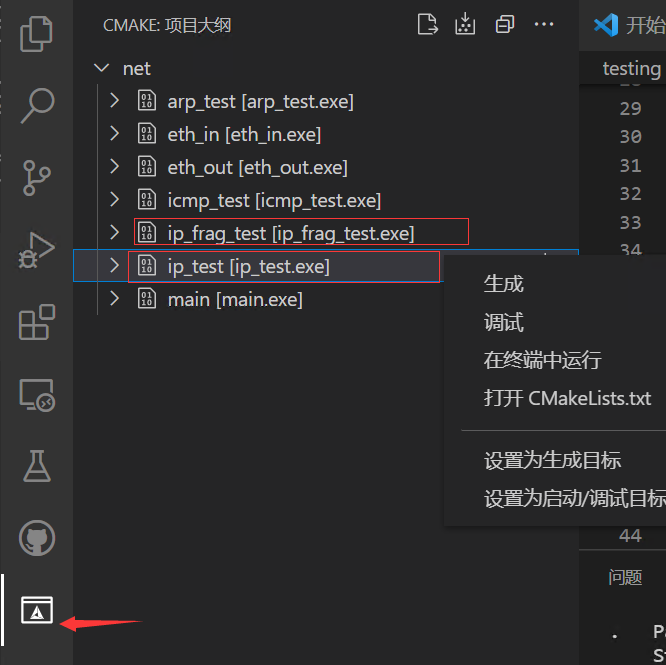
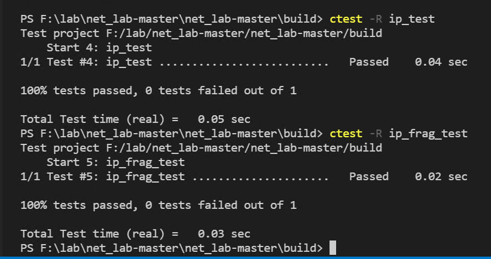

1. 实验目的
熟悉IP数据包格式，包括各个字段的含义和作用。
掌握IP数据包的的发送和接收处理过程，理解其中的关键环节和机制。
2. 实验任务
在完成协议栈之 ARP 协议的基础上，编写 IP 报文的发送、接收、IP 分片以及计算校验和函数。确保程序能够准确无误地发送和接收 IP 数据报文，并且顺利通过实验评测系统的严格测试。
重要
常见坑点预警
IP 头部校验和只覆盖 IP 首部，计算前必须先把校验和字段清零。
分片偏移字段的单位是 8 字节，不是字节数本身；除最后一个分片外，其余分片长度都应为 8 的整数倍。
IP 头部中的
protocol字段填写的是上层协议号（如 ICMP=1、TCP=6、UDP=17），不要和端口号混淆。如果
ip_frag_test长期过不去，请优先对照 典型 Bug 排查手册 中“IP 分片偏移单位错误”和“协议字段填写错误”排查。
3. 实验原理
3.1. IP协议概要
从之前的实验我们了解到，数据链路层仅能提供两个直连设备之间的通信功能。当数据需要跨越不同的数据链路时，就必须借助网络层来实现。IP（Internet Protocol，网际协议）是 TCP/IP 协议网络层的核心协议，其主要作用是 “实现终端节点之间的通信”，也就是所谓的 “点对点（point - to - point）通信”。IP 大致可分为三大作用模块，分别是 IP 寻址、IP 分包与组包以及路由转发。不过，在本次实验中，路由转发功能涉及到的路由协议并非重点内容，暂不做详细介绍。
3.1.1. IP地址
在 TCP/IP 通信环境中，所有的主机或路由器都必须为自己设定一个 IP 地址。严格来讲，每块网卡至少要配置一个或多个 IP 地址。在目前广泛使用的 IPv4 协议中，IP 地址以 32 位二进制数字的形式表示，同时需要使用子网掩码来区分网络地址和主机地址。通过将 IP 地址与子网掩码进行 “与” 运算，可以得到网络地址；将 IP 地址与子网掩码的非进行 “与” 运算，则可获得主机地址。网络地址用于标识同一个物理网络上的所有宿主机，而主机地址则用于标识该物理网络上的每一个具体宿主机。如果把 IP 地址类比为信封上的地址，那么网络地址就如同 “城市名”，主机地址则相当于 “门牌号”。

其中，IP 地址后面会使用 “/（斜线号）” 来分隔 IP 地址与子网掩码的位数。
3.1.2. IP协议
IP 协议提供了一种尽力而为、无连接的数据报交付服务。“尽力而为” 意味着 IP 协议并不保证 IP 数据报一定能够成功到达目的地。“无连接” 则表示 IP 协议不会维护网络单元（即路由器）中与数据报相关的任何链接状态信息，每个数据报都独立于其他数据报进行处理，这也导致 IP 数据报可能不会按照发送顺序进行交付。
提示
为什么 IP 要采用面向无连接的方式呢？
主要有两个原因：一是为了简化协议的实现过程，减少不必要的复杂性；二是为了提高数据处理的速度，因为面向连接的通信方式在每次通信之前都需要事先建立连接，这会在一定程度上降低处理速度。当 IP 需要建立连接时，可以委托上一层协议来提供相应的服务。
3.2. IP数据包格式
网络层位于数据链路层之上，其数据包的结构如下所示：

本实验是基于 IPv4 协议展开的，下面将重点介绍 IPv4 版本的 IP 协议。IPv4 的头部结构长度固定为 20 字节，如果包含可变长的选项部分，最多可达 60 字节。

版本号（Version） ：长度4比特。标识目前采用的IP协议的版本号。一般的值为0100（IPv4），0110（IPv6）。
首部长度（Header Length） ：长度4比特。这个字段的作用是为了描述IP包头的长度，因为在IP包头中有变长的可选部分。IP包头最小长度为20字节，则首部长度可设为5，4bit*5 =20字节。
区分服务(Type Of Service，TOS) ：3位优先权字段(现已被忽略) + 4位TOS字段 + 1位保留字段(须为0)。4位TOS字段分别表示最小延时、最大吞吐量、最高可靠性、最小费用，其中最多有一个能置为1。应用程序根据实际需要来设置TOS值，如ssh和telnet这样的登录程序需要的是最小延时的服务，文件传输ftp需要的是最大吞吐量的服务。本实验中，可将TOS设置为0。
总长度 : 指整个 IP 数据报的长度，单位为字节，即 IP 数据报的最大长度为 65535 字节（2 的 16 次方）。但由于 MTU（最大传输单元）的限制，长度超过 MTU 的数据报都将被分片传输，因此实际传输的 IP 分片数据报的长度远远小于这个最大值。
标识、标志、位偏移：这三个字段用于描述如何实现数据报的分片与重组。
标识 ：唯一地标识主机发送的每一个数据报，其初始值是随机生成的，每发送一个数据报，该值就会加 1。同一个数据报的所有分片都具有相同的标识值。在本实验中，标识字段可从 0 开始计数，然后逐步自增。
标志 : 共 3 位，位 1 为保留位；位 2 表示禁止分片（DF），若设置了此位，IP 模块将不会对数据报进行分片。在此情况下，如果 IP 数据报超过 MTU，IP 模块将丢弃该数据报并返回一个 ICMP 差错报文；位 3 标识更多分片（MF），除了数据报的最后一个分片外，其他分片都要将该位设置为 1。
位偏移 ：表示分片相对原始 IP 数据报数据部分的偏移。实际的偏移值为该值左移 3 位后得到的结果，所以除了最后一个 IP 数据报分片外，每个 IP 分片的数据部分的长度都必须是 8 的整数倍。
生存时间 ：数据报在到达目的地之前允许经过的路由器跳数。TTL 值由发送端进行设置，通常设置为 64。数据报在转发过程中，每经过一个路由器，该值就会被路由器减 1。当 TTL 值为 0 时，路由器会将该数据包丢弃，并向源端发送一个 ICMP 差错报文。TTL 的作用是防止数据报陷入路由循环。
协议 : 用于区分 IP 协议上的上层协议。在 Linux 系统的 /etc/protocols 文件中，定义了所有上层协议对应的协议字段，例如 ICMP 为 1，TCP 为 6，UDP 为 17。
头部校验和 ： 由发送端进行填充，接收端使用 CRC 算法对其进行校验，用于检查 IP 数据报头部在传输过程中是否损坏。
源IP地址和目的IP地址 : 分别表示数据报的发送端和接收端。一般情况下，这两个地址在整个数据报传递过程中保持不变，无论中间经过多少个路由器。
选项 ：可变长的可选信息，最多包含 40 字节。[RFC0791] 介绍了大多数的选项，在 IPv4 设计阶段，Internet 的规模相对较小，对来自恶意用户的威胁关注较少。由于 IPv4 头部大小的限制以及相关的安全问题，很多选项如今已不再实用或可取。
3.3. IP分片
从前面的介绍我们知道，通过 IP 数据报头部中的标识、标志、位偏移这三个字段，可以稳定地完成数据报的分片与重组操作。下图展示了一个 UDP 包长度为 3000 字节的 UDP 数据报（该报文头部为 8 字节，负载为 2992 字节）被分片成三个 IPv4 分组（不包含选项）的过程，其中 UDP 头部只出现在第一个分片里。

3.4. 校验和计算
3.4.1. IP头部校验和
IP 头部校验和仅针对 IP 首部进行校验，对其负载数据的校验由上层协议负责，IP 协议无需关心负载数据在传输过程中是否出错。IP 数据报在转发过程中，其头部字段可能会发生改变（例如修改 TTL 等），但负载数据字段通常不会改变。因此，通过只校验 IP 头部的方式，可以提高路由器处理分组的效率。
3.4.2. 反码求和
IP 头部校验和采用反码求和的方式进行校验。这种校验方式不仅在 IP 层使用，在 ICMP、UDP、TCP 等协议中，也用于计算它们头部以及整个数据区的校验和。那么，反码求和是如何计算的呢？简单来说，它是将二进制数据的各位依次取反，然后再进行求和运算。不过，由于对每个二进制数都取反码会带来一定的内存和时间开销，所以在反码求和函数中，我们通常采用以下步骤：
对两个二进制数直接进行加法运算。
如果相加过程中产生进位，则将进位加到下一列。
若最高位相加仍产生进位，则要在最后的结果中加 1。
对最后结果取反码。
在发送端发送数据之前，首先将校验和字段置为 0，然后把需要计算校验和的数据看成由一串 16bit 的半字组成，并对每个 16bit 依次进行反码求和运算，最后将最终结果保存在校验和字段中。
接收端收到数据后，首先备份校验和字段，接着将接收报文中的校验和字段置为 0，然后把需要计算校验和的数据同样看成是一串 16bit 的半字组成，并对每个 16bit 依次进行反码求和。最后，比较备份的校验和与计算出来的校验和是否一致，如果一致，则说明传输过程中没有出现任何差错；反之，则认为接收到的报文有错，将其丢弃不予处理。
4. 代码实现与检测
同学们需仔细研读本实验所提供的代码框架，将 src/ip.c 文件中的 ip_in() 函数、ip_out() 函数和 ip_fragment_out() 函数，以及 src/utils.c 文件中的 checksum16() 函数补充完整。
4.1. IP数据报输入处理
同学们要自行实现 ip_in() 函数，其具体功能步骤如下：
Step1 检查数据包长度：
若数据包的长度小于 IP 头部长度，表明该数据包不完整，将其丢弃，不予处理。
Step2 进行报头检测：
对 IP 报头进行详细检查，检查内容至少涵盖：IP 头部的版本号是否为 IPv4，总长度字段是否小于或等于收到的数据包长度等。若不符合这些要求，说明该数据包存在异常，将其丢弃。
Step3 校验头部校验和：
先把 IP 头部的头部校验和字段用其他变量保存起来，接着将该头部校验和字段置为 0。随后调用 checksum16 函数来计算头部校验和，将计算结果与 IP 头部原本的首部校验和字段进行对比。若不一致，说明数据包在传输过程中可能出现损坏，将其丢弃；若一致，则再将该头部校验和字段恢复成原来的值。
Step4 对比目的 IP 地址：
对比目的 IP 地址是否为本机的 IP 地址。若不是，说明该数据包并非发送给本机，将其丢弃。
Step5 去除填充字段：
如果接收到的数据包的长度大于 IP 头部的总长度字段，说明该数据包存在填充字段。此时可调用 buf_remove_padding() 函数去除填充字段。
Step6 去掉 IP 报头：
调用 buf_remove_header() 函数去掉 IP 报头，以便后续将数据传递给上层协议。
Step7 向上层传递数据包：
调用 net_in() 函数向上层传递数据包。
若遇到不能识别的协议类型（通过net_in的返回结果判断），调用 icmp_unreachable() 函数返回 ICMP 协议不可达信息。需要特别注意的是，在 Step 6 中已经去掉了 IP 报头，因此在发出 ICMP 协议报文前，需重新加入 IP 报头，以确保报文格式的完整性。
考虑到目前大家还未实现 ICMP 协议，只需调用 icmp_unreachable() 这个空函数，并传入 ICMP_CODE_PROTOCOL_UNREACH（ICMP 协议不可达信息）即可。
4.2. 校验和算法
同学们需要自行实现 checksum16() 函数，可参考上述实验原理中的 校验和计算说明 ：
注意
checksum16() 函数位于 src/utils.c 文件中。
uint16_t checksum16(uint16_t *data, size_t len)
{
// TODO
}
Step1 按 16 位分组相加：
把 data 看成是每 16 个 bit（即 2 个字节）组成一个数，依次相加。由于 16 位加法的结果可能会超过 16 位，因此加法结果需要用 32 位数来保存。
Step2 处理剩余 8 位：
如果最后还剩 8 个 bit 值，也要将这个 8bit 值与之前的和相加。
Step3 循环处理高 16 位：
判断相加后 32bit 结果值的高 16 位是否为 0。如果不为 0，则将高 16 位和低 16 位相加，如此循环，直至高 16 位为 0 为止。
Step4 取反得到校验和：
将上述处理后的和（低 16 位）取反，即得到校验和。
4.3. IP数据报输出处理
同学们要自行实现 ip_out() 函数，其具体功能步骤如下：
Step1 检查数据报包长：
首先检查从上层传递下来的数据报包长是否大于 IP 协议最大负载包长（1500 字节（MTU）减去 IP 首部长度）。
Step2 分片处理：
若数据报包长超过 IP 协议最大负载包长，则需要进行分片发送。具体操作如下：
首先调用 buf_init() 初始化一个 ip_buf。
将数据报包长截断，每个截断后的包长等于 IP 协议最大负载包长（1500 字节 - IP 首部长度），调用 ip_fragment_out() 函数发送出去。
如果截断后最后的一个分片小于或等于 IP 协议最大负载包长，调用 buf_init() 初始化一个 ip_buf，其大小等于该分片大小，再调用 ip_fragment_out() 函数发送出去。需要注意的是，最后一个分片的 MF（更多分片标志）应置为 0。
Step3 直接发送：
若数据报包长没有超过 IP 协议最大负载包长，则直接调用 ip_fragment_out() 函数发送出去。
4.4. IP数据报输出处理
同学们需要自行实现 ip_fragment_out() 函数，其具体功能步骤如下：
Step1 增加头部缓存空间：
调用 buf_add_header() 函数增加 IP 数据报头部缓存空间，为后续填写头部信息做准备。
Step2 填写头部字段：
按照 IP 协议的规范，填写 IP 数据报头部的各个字段，如版本号、首部长度、区分服务、总长度等。
Step3 计算并填写校验和：
先把 IP 头部的首部校验和字段填为 0，再调用 checksum16 函数计算校验和，然后把计算出来的校验和填入首部校验和字段。
Step4 发送数据：
调用 arp_out() 函数将封装后的 IP 头部和数据发送出去。
4.5. 实验自测
IP 自测需要通过 ip_test 和 ip_frag_test 测试。


接着，打开 VSCode 的终端，进入 build 目录，分别输入 ctest -R ip_test 和 ctest -R ip_frag_test 进行自测。


✅ 成功：终端显示 100% tests passed
❌ 失败：根据错误日志排查问题，可参考 Eth协议调试指南
4.6. IP重组（选做）
在基础实验的网络层开发中，我们完成了IP数据包的分片功能实现（基于RFC 791标准），该功能通过解析IP头部中的标识、分片偏移及标志位字段，结合MTU限制完成数据包切割，属于协议栈实现的初步环节。然而在实际网络传输场景中，IP分片重组面临以下关键挑战：
分片乱序问题：不同IP包的分片可能交叉到达
异构分片处理：同一IP包的分片可能具有非等长特性（最后一个分片除外）
分片丢失风险：部分分片可能在传输中丢失
有兴趣的同学可以尝试做一下IP重组附加题，详见 IP重组 。建议参考Linux内核ip_defrag.c模块的设计思路。